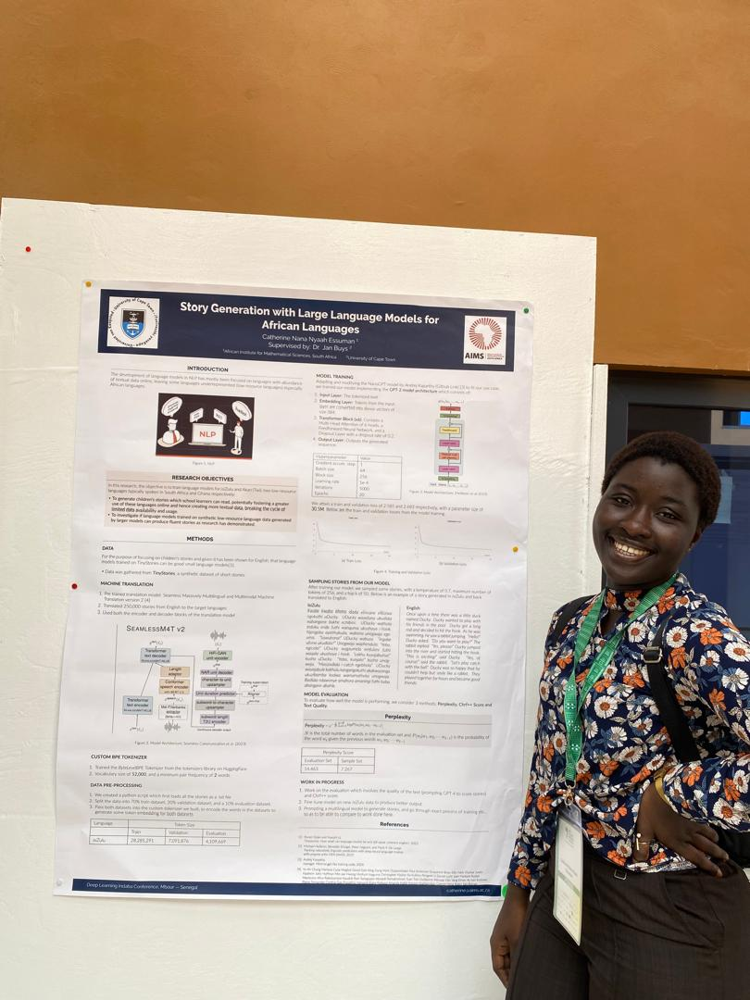

Hello, I'm Catherine Nana Nyaah Essuman
Data and Research Scientist
About Me
I am a masters graduate of Mathematical Sciences (Artificial Intelligence for Science) from the African Institute of Mathematical Sciences (AIMS) in affiliation with the University of Cape Town. I had my undergraduate degree also in Mathematical Sciences (Statistics with Mathematics) from the University of Ghana. My studies are deeply rooted in the world of machine learning and AI, focusing on their applications in Science.
Previously, I worked as a data analyst and consultant, where I thrived in roles that allowed me to dive into research, analyse data, and build interactive dashboards. I also had the opportunity to manage client operations and office finances, which added a practical edge to my analytical skills.
My passion lies in becoming a data and research scientist, with a special focus on Natural Language Processing and AI in health. I am driven by the goal of harnessing data to create impactful, tailored solutions that meet individual needs.
Education
University of Ghana
Bachelor of Science in Mathematical Sciences (2018 - 2022)
Majored in Statistics, with a minor in Mathematics. I held a position as the Deputy Women's Commissioner for the UG Mathematics Department.
University of Cape Town (AIMS)
Master of Science in Mathematical Sciences (AI for Science) (2024)
Projects:
• Recommender Systems using Matrix Factorization Techniques
• Fine-Tuning a Language Model
• Replicated a Renewal Equation to model South Korea COVID-19 Data in Numpyro
Theses
Story Generation Using Large Language Models for African Languages
University of Cape Town (MSc.)
Built text generation models from scratch in isiZulu and Yoruba—two low-resource languages—to generate children’s stories. This helps break the cycle of limited online textual data for these languages.
Factors Influencing Purchases of Street Food & Non-Food Items in Accra
University of Ghana (BSc.)
Summarized key insights on consumer behavior and street vending, identifying major demographic and economic factors that influence purchasing decisions.
Contact Me
Email: cathyessuman@gmail.com